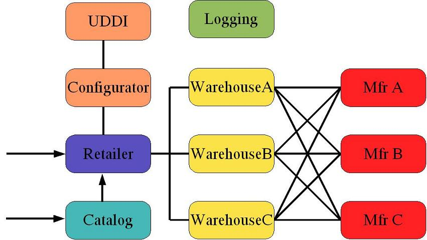

The latest updates to this document are in the online documentation posted on our web site.
1.0 Introduction
2.0 Directory Structure
3.0 Pre-Requisites
3.1 Container
3.2 Database
4.0 Invoking the service
4.1 Retailer
4.2 Configurator
4.3 Catalog
5.0 Building from the source
6.0 Configuring Logging
7.0 Troubleshooting
8.0 References
The Web Services Interoperability Organization (WS-I) [1] is an organization committed to promoting interoperability among Web Services based on common, industry-accepted definitions and related XML standards support. Towards this end, the WS-I organization is producing a set of deliverables that is intended to assist developers in creating and deploying interoperable Web Services. WS-I Sample Application, one of the deliverables from WS-I, demonstrates the reality of practical application of Web Services technologies to solve real business needs.
WS-I Sample Application is defined as a sample Supply Chain Management application. The use case design of this sample application is defined in Supply Chain Management Use Case Model [2] and Use Cases for Attachments Sample Applications 1.0 [3] . Technical design and implementation details of this sample application are documented in Supply Chain Management Architecture document [4] and Technical Architecture for Attachments Sample Applications 1.0 [5].

The application being modeled is that of a Retailer offering consumer electronic goods to Consumers; a typical B2C model. To fulfill orders, the Retailer has to manage stock levels in Warehouses. When an item in stock falls below a certain threshold, the Retailer must restock the item from the relevant Manufacturer's inventory; a typical B2B model. In order to fulfill a Retailer's request, a Manufacturer may have to execute a production run to build the finished goods. Each use case includes a logging call to a logging facility in order to monitor the activities of the services.
Retailer can also out-source the cataloging capabilities to a Catalog service that provides operations to access the catalog of products. The Catalog enables a consumer to browse it's contents and retrieve additional information about individual items. The consumer can then order the products from the Catalog which can then be packaged into an order and sent to a Retailer.
Optionally, there is a Configurator Web Service that lists all of the implementations registered in the UDDI registry for each of the Web Services in the sample application.
The 1 Retailer, 1 Logging Facility, 3 Warehouses, 3 Manufacturers, and 1 Configurator Web Service are designed and implemented as part of WS-I Supply Chain Management Sample Applications 1.0 FCS. 1 Catalog Web Service is designed and implemented as part of WS-I Attachments Sample Applications 1.0. It demonstrates application of Basic Profile 1.1 [6], Simple SOAP Binding Profile 1.0 [7], and Attachments Profile 1.0 [8] to a real-life scenario.
This document explains the Sun's implementation of WS-I Sample Supply Chain Management Application 1.0 FCS and WS-I Attachments Sample Applications 1.0 EA.
This section explains the directory structure
bin
Scripts to invoke the retailer, configurator and catalog clients
docs
index.html, this file
etc/config
Configuration files required by the JAX-RPC tools
etc/wsdl
WSDL descriptions for the Web Services
lib
Client jar file
src
Source code
wsi-server.war
WAR file with all the Web Service endpoints
logs
Generated results and SOAP request and response message files
Before any of the sample app Web Services can be invoked, you need to configure the container and database of your choice as described below.
Start the Application Server. Configure the http.proxyHost and http.proxyPort properties
for the container by giving the following command:
asadmin create-jvm-options --user <admin user> --password
<admin password> -Dhttp.proxyHost=<your-proxy-host>:-Dhttp.proxyPort=<your-proxy-port>
If the Application Server is not running on the standard host and port, then
you need to specify --host and --port options.
Configure the http.proxyHost and http.proxyPort properties
for the container
-Dhttp.proxyHost=<your-proxy-host> in the first
empty text box next to "Add" and click on OK.-Dhttp.proxyPort=<your-proxy-port> in the first
empty text box next to "Add" and click on OK.-Djava.awt.headless=true in the first empty box next
to "Add" and click on OK. This will enable the headless operation
for AWT images involved in the Catalog Web Service.conf/server.xml, set the unpackWARs attribute to
true in the Engine element with the Host element whose host attribute is
localhost.
TOMCAT_HOME/webapps directory by the war file
name. To redeploy an app, the exploded directory needs to be removed
from TOMCAT_HOME/webapps directory before starting the Tomcat
container. http.proxyHost and http.proxyPort properties
for the container
http.proxyHost=<your-proxy-host> on a new line
to TOMCAT_HOME/conf/jwsdp.properties.http.proxyPort=<your-proxy-port> on a new line
to TOMCAT_HOME/conf/jwsdp.properties.Pointbase database is recommended when Sun Java System Application Server 8.0
Platform Edition is the chosen container. MySQL database is recommended when Sun Java System Web Server 6.1 or Tomcat
is the chosen container. The JWSDP_HOME/wsi-sampleapp/wsi-server.war
is configured to be used with the Pointbase database server. The steps to
reconfigure the WAR file for MySQL database are given in section 3.2.2 below.
AS_HOME/pointbase
directory, where AS_HOME is the installation directory of Sun
Java System Application Server 8.0 Platform Edition (SJSAS 8.0PE). This
version of pointbase can be used under the licensing terms of SJSAS 8.0 PE.AS_HOME/pointbase/tools/serveroption
directory and invoke the startserver.[sh | bat]
script./port:9092 after com.pointbase.net.netServer.AS_HOME/pointbase/tools/serveroption directory and
invoke the startconsole.[sh | bat]
script.DBA menu item from the main menu, then
select Create and then select New Database.
jdbc:pointbase:server://localhost/wsi.AS_HOME/pointbase/lib/pbclient.jar
to AS_HOME/domains1/domain1/lib/ext directory.server.xml for the instance chosen during
Java WSDP installation. Typically this file will be in https-<your-server-name>/config
directory where <your-server-name> is the name of your server
on which Sun Java System Web Server 6.1 is installed.classpathsuffix attribute.classpathsuffix
attribute.TOMCAT_HOME/common/lib.JWSDP_HOME/wsi-sampleapp/src
directory and invoke the repackage-war target. Invoke the deploy.wsi-sampleapp.webapps target on the integration script
for your container. This script is available in
JWSDP_HOME/jwsdp-shared/bin/jwsdponsjsas.[sh
| bat] for Sun Java System Application ServerJWSDP_HOME/jwsdp-shared/bin/jwsdponsjsws.[sh
| bat] for Sun Java System Web ServerJWSDP_HOME/jwsdp-shared/bin/jwsdpontomcat.[sh
| bat] for TomcatFor instance for Sun Java System Application Server installed in /opt/SUNWappserver
directory, this script is invoked as:
JWSDP_HOME/jwsdp-shared/bin/jwsdponsjsas.sh /opt/SUNWappserver deploy.wsi-sampleapp.webapps
MySQL database is recommended when Sun Java System Web Server 6.1 or Tomcat is the chosen container.
MYSQL_HOME directory and invoke the /bin/mysqld_safe
script,
where MYSQL_HOME is the installation directory of MySQL
database. As per MySQL documentation, mysqld_safe is the recommended way to
start a mysqld server on Unix and NetWare. Refer to The mysqld_safe Server Startup Script
for more details.
MYSQL_HOME and
specifying the path as ./bin/mysqld_safe../bin/mysqladmin variables
command from MYSQL_HOME directory and looking for the value of
port variable. Otherwise you can change the port number by
invoking the script as ./bin/mysqld_safe --port=3306.MYSQL_HOME/bin directory and invoke the command
mysqld --console. Refer to Installing
MYSQL on Windows for more details.mysqladmin variables
command from MYSQL_HOME/bin directory and looking for the value of
port variable. Otherwise you can change the port number by
specifying port=3306 on a new line in %WINDIR%/my.ini.MYSQL_HOME directory and invoke the ./bin/mysql
script.MYSQL_HOME and
specifying the a user name with database creation privilege as ./bin/mysql
--user=root. root is a default user, you may choose an alternate
user which has the permissions to create a database. This gives a mysql
prompt.MYSQL_HOME/bin directory and invoke mysql
script. The default MySQL user in windows seems to have permission
to create a database. You my choose an alternate
user which has the permissions to create a database. If you happen to
choose an alternate user, you need to modify JWSDP_HOME/wsi-sampleapp/etc/mysql.db.props
file with the correct values for user and password
fields. This gives a mysql
prompt.mysql prompt, enter create database wsi;
command and hit Enter.quit; on the mysql prompt to quit the
script.mysql-connector-java-<version>-<release>-bin.jar
where <version> is the version number of the Connector/J
and <release> indicates whether it's a stable, alpha or
old release.
SJSAS_HOME/domains/domain1/lib/ext directory, if domain1
is the chosen domain.
server.xml for the instance chosen during
Java WSDP installation. Typically this file will be in https-<your-server-name>/config
directory where <your-server-name> is the name of your server
on which Sun Java System Web Server 6.1 is installed.classpathsuffix attribute.classpathsuffix
attribute.TOMCAT_HOME/common/lib.JWSDP_HOME/wsi-sampleapp/src directory and invoke
the repackage-war
target as followsant repackage-war -Ddatabase=mysqldeploy.wsi-sampleapp.webapps target on the integration script
for your container. This script is available in
JWSDP_HOME/jwsdp-shared/bin/jwsdponsjsas.[sh
| bat] for Sun Java System Application ServerJWSDP_HOME/jwsdp-shared/bin/jwsdponsjsws.[sh
| bat] for Sun Java System Web ServerJWSDP_HOME/jwsdp-shared/bin/jwsdpontomcat.[sh
| bat] for TomcatMake sure that the container and the database server configured above are running before invoking any of the services. The chosen database server will be running if you have performed step 2 in section 3.2.1 or 3.2.2.
etc/retailer-config.xml) to the Retailer Web Service. Retailer
Web Service then
invokes the warehouse and manufacturer Web Service to fulfill the supply chain
model defined in section 1.0 above. The orders are defined such that the various
combinations of retailer, warehouse and manufacturer are being invoked. The set
of endpoints is defined in etc/endpoints.props and the combination
of endpoints is defined in etc/vendor-config.xml.
etc/endpoints.props has the correct host and port
information.JWSDP_HOME/wsi-sampleapp/bin/run-retailer.[sh | bat] to invoke the client. This will invoke
the getCatalog function from the RetailerService and places the
various pre-defined orders to the Retailer Web Service. http.proxyHost and http.proxyPort properties
for your container to
allow the container to be able to talk to UDDI Business
Registry outside the firewall. Refer to section 3.1 for container specific
configuration.JWSDP_HOME/wsi-sampleapp/bin/run-query.[sh | bat] to invoke the client.run-query.[sh | bat]
is to contact UDDI business registry and generate the endpoints information
dynamically. However Configurator Web Service also maintains all endpoints
information in a local cache accessible by specifying the following
argument when invoking the script
-Dconfigurator.refresh=false run-query.[sh | bat] uses the default Configurator
Web Service bundled
with Java WSDP. If you need to use another Configurator Web Service, you need to
specify the following argument when invoking the script
-Dconfigurator.endpoint=<ANOTHER_CONFIGURATOR_ENDPOINT>configurator.refresh to true
as described in the previous step. Search server-side logs for "Configurator"
keyword and the endpoint address is available in the corresponding CONFIG log entry.
Refer to section 6.0 for details on how to configure
logging. -Dconfigurator.endpoint and -Dconfigurator.refresh options are
specified, then endpoints information is retrieved in the following manner:| configurator.refresh | configurator.endpoint | How endpoints are generated |
| true | Not specified | Configurator Web Service talks to the UDDI registry |
| false | Not specified | Local cache from the Configurator Web Service |
| true | Specified | Remote endpoint talks to the UDDI registry |
| false | Specified | Local cache from the remote endpoint |
Catalog client queries the Catalog Web Service which simulates an out-sourced cataloging capability that is used by the Retailer Web Service. It provides operations to access the catalog of products. The Catalog enables a consumer to browse its contents and retrieve additional information about individual items. In a larger context, the products that the consumer orders from the Catalog can be packaged into an order and sent to a Retailer.
The set of Catalog endpoints is defined inetc/endpoints.props.
etc/endpoints.props has the correct host and port
information.JWSDP_HOME/wsi-sampleapp/bin/run-catalog.[sh | bat] to invoke the client. This will invoke
the getCatalogWithImages and getProductDetails
function from the Catalog Web Service. getCatalogWithImages
return attachment references of thumbnail images for each product in the
catalog. getProductDetails provides additional details
about each product, a larger product image, and a product spec sheet.
The spec sheet and picture are conveyed as SOAP attachments.run-catalog.[sh | bat]
is to invoke getCatalogWithImages and getProductDetails
for each product in the Catalog. If you need to invoke only getCatalogWithImages,
you need to specify the following argument when invoking the script
-Dcatalog.level=thumbnailgetProductDetails, you need to
specify the following argument when invoking the script
-Dcatalog.level=detailsrun-catalog.[sh | bat] uses the default
Catalog Web Service bundled
with JWSDP. If you need to use another Catalog Web Service, you need to add
the endpoint in etc/endpoints.props in the form
vendor.catalog=ENDPOINT_ADDRESS
-Dcatalog.endpoint=vendorvendor needs to match the "vendor" string specified in
JWSDP_HOME/wsi-sampleapp/etc/endpoints.props. http.proxyHost and http.proxyPort properties in JWSDP_HOME/conf/jwsdp.properties
before building from the source.
src directory and invoke ant client command. This will
overwrite the existing wsi-client.jar in JWSDP_HOME/wsi-sampleapp/lib directory. src directory and invoke ant
server command. This will overwrite the existing wsi-server.war in
JWSDP_HOME/wsi-sampleapp
directory.
-Ddatabase=mysql
property when invoking the ant target.deploy.wsi-sampleapp.webapps target on the integration script
for your container. This script is available in
JWSDP_HOME/jwsdp-shared/bin/jwsdponsjsas.[sh
| bat] for Sun Java System Application ServerJWSDP_HOME/jwsdp-shared/bin/jwsdponsjsws.[sh
| bat] for Sun Java System Web ServerJWSDP_HOME/jwsdp-shared/bin/jwsdpontomcat.[sh
| bat] for Tomcat
| Logging Level | Usage |
| SEVERE | Server-side or client-side exception |
| WARNING | Non-blocking error conditions |
| INFO (default) | Basic flow of application |
| CONFIG | Logging entries from the LoggingFacility |
| FINE | SOAP request and response messages |
| FINER | Entry and exit points of primary methods |
| FINEST | Display intermediate steps from the primary methods, if any |
To change the default logging level (INFO) on server-side and client-side to a different level:
JAVA_HOME/jre/lib/logging.properties file.
com.sun.wsi.scm.level=LEVELLEVEL is one of the seven logging levels mentioned above.
etc/endpoints.props file. The
default endpoints are configured for host "localhost" and port
"8080". If your application is deployed at a different port, then ensure that these are reflected correctly in
the etc/endpoints.props file.run-retailer
script is invoked. If database is started after the script is invoked, you
need to restart the container.JWSDP_HOME/wsi-sampleapp/etc/[mysql
| pointbase].props. If you need to modify any of
the database configuration properties, edit the .props file specific to your
database and invoke ant repackage-war -Ddatabase=[pointbase
| mysql] target from the JWSDP_HOME/wsi-sampleapp/src
directory. And then invoke the deploy.wsi-sampleapp.webapps
target on the integration script
for your container.
http.proxyHost and http.proxyPort properties in JWSDP_HOME/conf/jwsdp.properties
so that they specify the system on your network through which you access the Internet.etc/endpoints.props
file and
create different configurations, comprising of endpoints from different
vendors, in etc/vendor-config.xml. Each of
these configurations will be used to place the orders specified in etc/retailer-config.xml. However if your endpoints are
deployed inside firewall, then only Retailer Web Service hosted within the
firewall can be mixed with the other endpoints installed outside firewall.logs/retailer-soap-messages.txt.logs/logging-soap-messages.txt.logs/configurator-soap-messages.txt.Server-side log messages are available in the corresponding logs directory of your container.